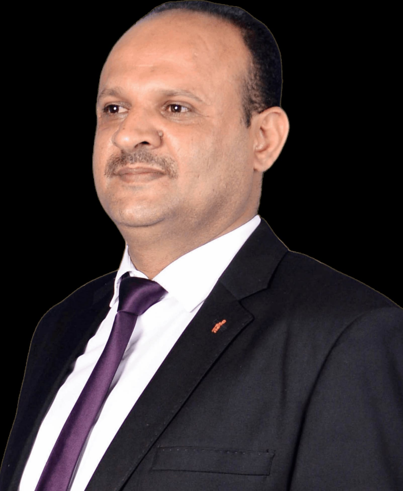

مركز الدكتور نشوان عبد الوهاب الخولاني
لطب الأسنان وجراحة الفم والوجه والفكين
لطب الأسنان وجراحة الفم والوجه والفكين
🎓 الكفاءة الجراحية والابتكار الرقمي
طبيب وجراح فم ووجه وفكين - متخصص في حلول زراعة الأسنان الرقمية المعقدة وتصميم الابتسامة ثلاثية الأبعاد بمدينة إب.

نؤمن في مركزنا بأن طب الأسنان الحديث لم يعد مجرد إجراءات تقليدية، بل هو مزيج من العلم الجراحي الدقيق والتخطيط الرقمي المتقدم. بفضل تخصصنا في جراحة الفم والوجه والفكين، نحرص على تقديم حلول جذرية وآمنة تماماً لأصعب الحالات، لاسيما حالات الضمور العظمي الشديد وفقدان الأسنان الكامل.